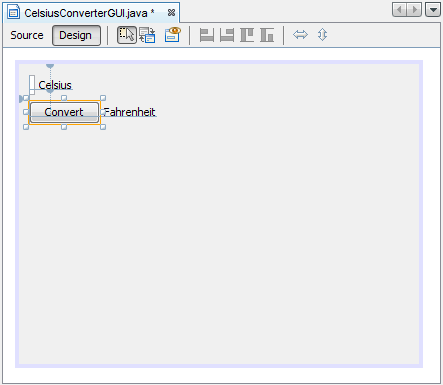
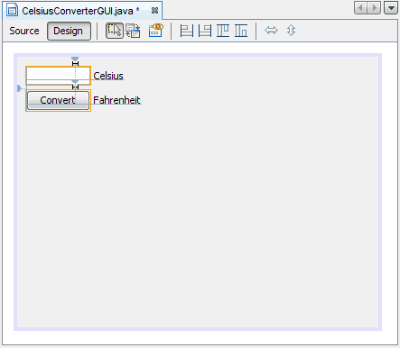
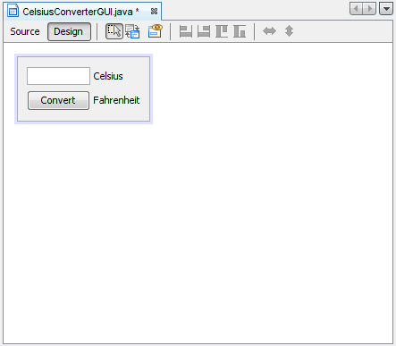
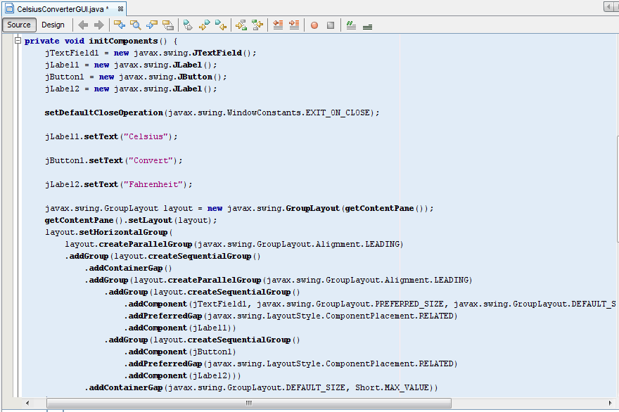

Con los componentes del IGU ahora colocados, es hora de hacer los ajusts finales. Hay unas pocas formas diferentes de hacer esto; el orden sugerido aquí es sólo uno de las posibles aproximaciones.
Primero, haga doble click en JTextField y JButton para cambiar el texto por defecto
que fue insertado por el EID: Cuando borra el texto del JTextField, éste se reducirá en tamaño como
se muestra debajo. Cambie el texto del JButton de "JButton1" a "Convert".
Cambie también el texto de la JLabel de arriba a "Celsius" y de la de abajo a
"Fahrenheit".

Estableciendo el Texto del Componente
A continuación, seleccione con el ratón y la tecla Maýusculas los componentes JTextField y
JButton. Esto resaltará cada uno mostrando que están seleccionados. Haga click derecho
(Click más la tecla control para los usuario de Mac) y seleccione Mismo Tamaño -> Mismo Ancho. Los
componentes tendrán ahora el mismo tamaño, como es mostrado debajo. Cuando ejecute este paso, asegúrese de que
el JFrame no esté también seleccionado. Si lo está, el menú Mismo Tamaño no estará activo.

Estableciendo los Tamaños de JTextField y JButton
Finalmente, agarre la esquina inferior derecha del JFrame y ajuste su tamaño para eliminar
cualquier espacio en blanco extra. Note que si usted elimina todo el espacio extra (como es mostrado debajo) el
título (el cual solo aparece en tiempo de ejecución) puede no mostrarse completamente. El usuario final es libre
de cambiar el tamaño de la aplicación como desee, pero usted podría querer que quede algo de espacio extra en el
lado derecho para asegurarse de que todo encaja correctamente. Experimente, y use la captura de pantalla del
IGU terminado como una guía.

El IGU Completado
¡La porción del IGU de esta aplicación está ahora completada! Si el EID NetBeans ha hecho su trabajo, usted debe
sentir que la creación de este IGU fue una tarea simple, si no trivial. Pero tómese un minuto para pulsar en la
pestaña de fuentes; usted podría sorprenderse por la cantidad de código que ha sido generado.

Esta figura ha sido reducida para que encaje en la página.
Pulse en la imagen para verla en su tamaño natural.
Para ver el código en su totalidad, desplázese hacia arriba y hacia abajo dentro del EID según sea necesario. Puede expandir o colapsar ciertos bloques de código (como los cuerpos de los métodos) pulsando el símbolo + o - en la parte izquierda del editor de código.